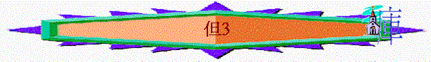

|
至 高 者 在 人 間 掌 權 |
|||||||||
|
至高者在人處事歷史中掌權 |
至高者在將來的世界中掌權 |
||||||||
|
王膳 |
解夢 |
火搖 |
獸人 |
指頭 |
獅坑 |
四獸 |
二羊 |
七十個七 |
南北王 |
|
1 |
2 |
3 |
4 |
5 |
6 |
7 |
8 |
9 |
10-12 |
一.至高者在人處身歷史中掌權（１－６）
３．超越的拯救（３）
∼大自然最催毀性的火 vs 神的拯救
a.信仰的挑戰
i.明顯的不對
「尼布甲尼撒王造了一個金像，高六十肘，寬六肘，立在巴比倫省杜拉平原。」V.１
「你們一聽見角、笛、琵琶、琴、瑟、笙，和各樣樂器的聲音，就當俯伏敬拜尼布甲尼撒王所立的金像。」V.５
「除了我以外，你不可有別的神。「不可為自己雕刻偶像，也不可做什麼形像彷彿上天、下地，和地底下、水中的百物。不可跪拜那些像，也不可事奉他，因為我耶和華你的神是忌邪的神。恨我的，我必追討他的罪，自父及子，直到三四代。」出２０：３－５
ii.王權的命令
「那時傳令的大聲呼叫說：「各方、各國、各族（原文作舌：下同）的人哪，有令傳與你們。」V.４
iii.仇敵的控告
「那時，有幾個迦勒底人進前來控告猶大人。」V.８
「現在有幾個猶大人，就是王所派管理巴比倫省事務的沙得拉、米煞、亞伯尼歌；王啊，這些人不理你，不事奉你的神，也不敬拜你所立的金像。」V.１２
iv.性命的威嚇
「尼布甲尼撒問他們說：「沙得拉、米煞、亞伯尼歌，你們不事奉我的神，也不敬拜我所立的金像，是故意的嗎？你們再聽見角、笛、琵琶、琴、瑟、笙，和各樣樂器的聲音，若俯伏敬拜我所造的像，卻還可以；若不敬拜，必立時扔在烈火的搖中，有何神能救你們脫離我手呢？」」V.１４－１５
v.妥協的轉機
vi.即時的應對
b.三友的回應
i.可以的回應
（１）可以依從
（２）可以裝假
（３）可以讓步
（４）可以逃走
ii.美好的榜樣
（１）同心的堅持
「沙得拉、米煞、亞伯尼歌對王說：「尼布甲尼撒啊，這件事我們不必回答你。」V.１６
（２）信心的倚靠
「即便如此，我們所事奉的神能將我們從烈火的搖中救出來。王啊，他也必救我們脫離你的手。」V.１７
（３）至死的忠心
「即或不然，王啊，你當知道我們決不事奉你的神，也不敬拜你所立的金像。」V.１８
c.超然的拯救
i.分別的拯救
「因為王命緊急，又甚熱，那抬沙得拉、米煞、亞伯尼歌的人都被火焰燒死。」V.２２
ii.神子的同在
「那時，尼布甲尼撒王驚奇，急忙起來，對謀士說：「我捆起來扔在火裡的不是三個人嗎？」他們回答王說：「王啊，是。」王說：「看哪，我見有四個人，並沒有捆綁，在火中遊行，也沒有受傷；那第四個的相貌好像神子。」」V.２４－２５
∼神子是誰？
iii.完全的保守
「那些總督、欽差、巡撫，和王的謀士一同聚集看這三個人，見火無力傷他們的身體，頭髮也沒有燒焦，衣裳也沒有變色，並沒有火燎的氣味。」V.２７
iv.君王的讚美
「尼布甲尼撒說：「沙得拉、米煞、亞伯尼歌的神是應當稱頌的！他差遣使者救護倚靠他的僕人，他們不遵王命，捨去己身，在他們神以外不肯事奉敬拜別神。」V.２８
v.仇敵得報應
「現在我降旨，無論何方、何國、何族的人，謗讟沙得拉、米煞、亞伯尼歌之神的，必被凌遲，他的房屋必成糞堆，因為沒有別神能這樣施行拯救。」V.２９
vi.三友得高升
「那時王在巴比倫省，高陞了沙得拉、米煞、亞伯尼歌。」V.３０